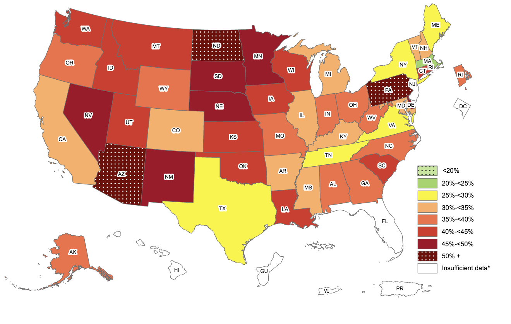

Writing
Essays, and articles for the UCLA Bruin Political Review. For neurotechnology, see my blog Efferent.
Bruin Political Review
Obesity: A Public Policy Failure
The Science Behind Gender-Affirming Care for Minors
Universal Basic Income for Women
- An Investigation into the Problems and Solutions Regarding China’s Pension System
- Evaluating the Successes and Failures of the Bush Administration
- An Elegy of a Beloved Santa Clara County Landmark
- A Deep Analysis into Toni Morrison’s Work
- The Ethics of Human-Derived Cell Lines
- BART’s Semicentennial Struggle with Automation and Corruption
- Philosophy 123 final paper